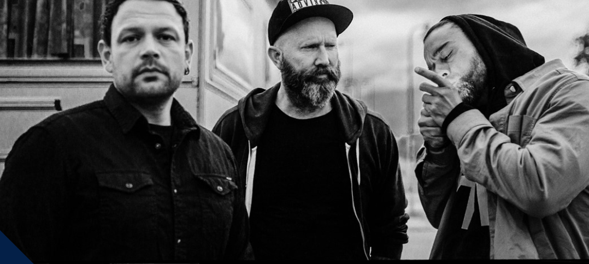
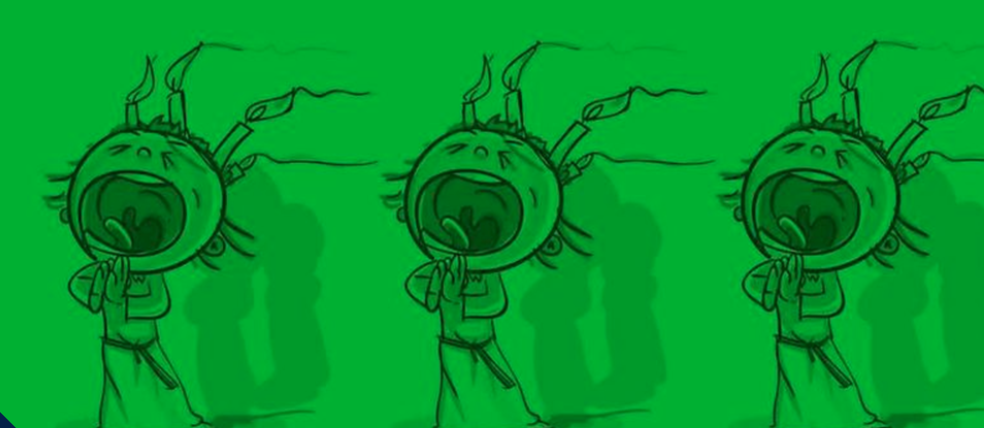

Du er inviteret, når Sorthandsk forener det velkendte rå og hårdtslående med autentisk og smuk lyrik. der går lige i hjertet. Den Aarhus-baserede trio har brugt de seneste år på at færdiggøre to sammenhængende ep'er, der udgives i efteråret 2024 og foråret 2025. Det nye materiale betyder turné, og derfor kan du glæde dig til at opleve Marwan, Michel Svane og Søren Bendz indtage Radar den. 7 december. Billetpris: 175,-
Event Detaljer


Unge elever fra Aarhus Musikskole, Musikskolen LAURA, lokale klubber og fritidshjem spiller julen ind på Radar, når de traditionen tro inviterer til ROCK MED LUCIA. Meget af musikken er skrevet af de unge musikere selv, der alle er i alderen 12-20 år. De glæder sig til at fyre den af med super Radar-lyd og sceneshow. Kom og nyd aftenen og bak op om de unge mennesker, der hele året arbejder for at dygtiggøre sig på diverse instrumenter. Baren er åben, og det bliver skidehyggeligt! Billetpris: 30,-